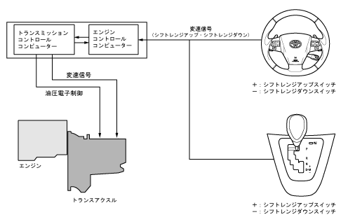

| Shift Operation Outline |
| ● |
With the 6-speed sequential Shiftmatic with paddle shifts, selecting the M position with the shift lever changes from automatic shift mode to M mode, enabling manual driving in the gear selected by the driver through shift operation of the shift lever or the paddle shifts mounted on the steering wheel.
|
| ● |
The paddle shifts are also enabled during normal driving with the shift lever in the D position, and operating the "-" (DOWN) paddle shift switches to range selection control in the D position.
|
 |
 Range Selection Control in D Position Range Selection Control in D Position
|

| Switching to M Mode
|
| Sequential Shiftmatic Indicator Display
|
| Gears Available During Range Selection Control in D Position
|